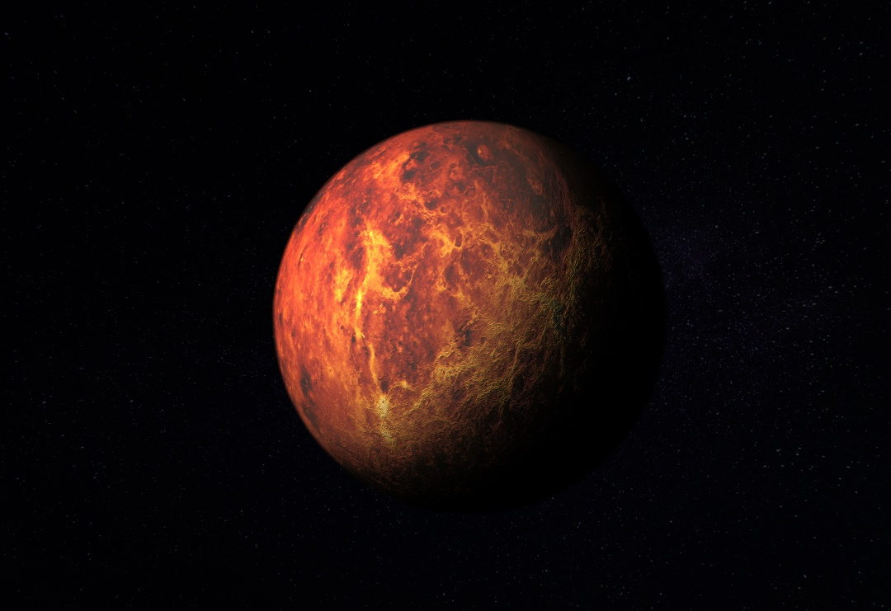
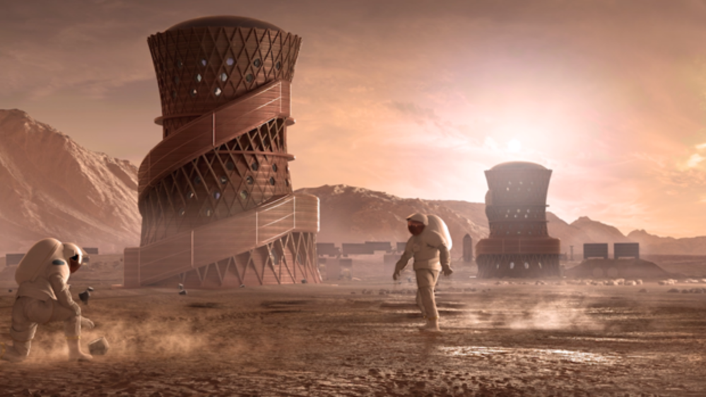
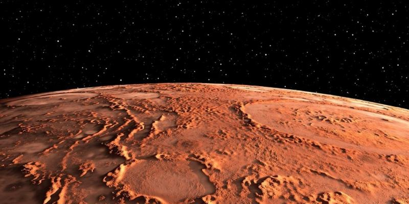

Como la Tierra, Marte tiene estaciones, casquetes polares, volcanes, cañones y clima. Tiene una atmósfera poco densa hecha de dióxido de carbono, nitrógeno y argón.

Hay signos de antiguas inundaciones en Marte, pero ahora el agua existe principalmente en su polvo helado y sus nubes delgadas. En algunas laderas marcianas, se han encontrado pruebas de agua líquida salada.
Los científicos quieren saber si Marte podría haber tenido seres vivos en el pasado. También quieren saber si Marte podría albergar vida ahora o en el futuro.
Estructura y superficie
Es un planeta terrestre: es pequeño y rocoso.
Tiene una atmósfera poco densa.
Cuenta con una atmósfera activa, pero la superficie del planeta no lo es. Los volcanes están inactivos.

El tiempo en Marte
Un día dura 24,6 horas, un poco más que un día en la Tierra.
Un año equivale a 687 días en la Tierra, casi el doble que el año terrestre.
Vecinos de Marte
Tiene dos lunas: Fobos y Deimos.
Es el cuarto planeta contando desde el Sol. Eso significa que la Tierra y Júpiter son sus vecinos.
